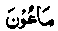
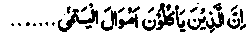
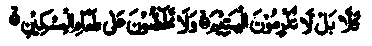

Chapter Two · Section (a): Ayaat on warning against miserliness and hoarding
5. Ayaat on kindness to the orphans
15. Have you observed the person who belies religion?
(particularly the Day of Judgement). He is the one who repels the orphan, and urges not the feeding of the needy. Ah! Woe unto the worshippers who are heedless of their prayers. They would be seen (at worship) yet refuse small kindnesses. (al-Maahm: 1-7).
Note: Ibne Abbas Radhiallaho anho has said that repelling the orphan implies denying him his legitimate rights. Qatadah Rahmatullah alaihe says that it means being unjust to him, which happens because of having no faith in'Akhirah. Whoever believes in Akhirah and the process of retribution, will never be unkind and harsh to anyone nor will he accumulate wealth, but will prefer spending it liberally.
He believes that by investing ten rupees today in that business, he will surely get return of one thousand tomorrow, all lawfully earned; he will certainly not hesitate to take that step. Ibne Abbas Radhiallaho anho has said that the worshippers,mentioned in this Surah, are the hypocrites who prayed in the presence of people for show. Their abandoning prayers means delaying the prayers deliberately, thus misssing often the proper time.
The Ulama have given several explanations of the word (

) Maa'oon. Some have said that it means Zakaat,while others have interpreted it as things of common use. Abdullah Ibne Masjid has said that in the days of Rasulullah Sallallaho alaihe wasallam they applied this term to those things which people used to borrow from each other and returned them after use: such were the acts of mutual help by lending things like axe, cooking-pot, bucket, scales, etc. Abu Hurairah Radhiallaho anho has also repeated the same items by quoting Rasulullah Sallallaho alaihe wasallam . When someone asked Ikrimah Radhiallaho anho the meaning of Ma‘oon, he said that essentially it stands for Zakaat and its lowest forms are lending things like a sieve, a pail, a needle, etc. (Durre Manthur). This Surah contains several warnings. It includes special warning about the orphans: ill treating an orphan is among the causes for one’s punishment and damnation in Akhirah. Many people take over as guardians of orphans simply for the sake of mis-appropriating their property, but when the orphans,or some others on their behalf, raise a demand, they rebuke them. For such people, there can be no doubt about future punishment and damnation. This is apparently the reason for the revelation of this Surah. There are many Ayaat in the Qur’an containing warnings on ill-treatment of orphans.The author has given reference to twenty such Ayaat. The gist of those Ayaat is to impress on people the utmost importance of giving good treatment to the orphans, which includes working for the improvement of their lot and being their sincere well-wisher. One is required to take care of their property, to be kind to them and to do everything possible for their well-being and happiness. If an orphan girl is taken in marriage, her dower (Mahr) must not be reduced because there is no one to plead for hen this is one of the admonitions given in Ahadith. Rasulullah Sallallaho alaihe wasallam has said that whosoever, undertakes to look after an orphan, will be as close as to him in Jannah as the two fingers, which he demonstrated by putting together two fingers: his middle and the forefinger. This means a close neighbourhood of Rasulullah Sallallaho alaihe wasallam, a very great honour indeed! An Hadith says that when someone affectionately pats the head of an orphan to seek the pleasure of Alah Ta'ala, he will receive as many blessings as the number of the hair which come under his hand. If a person does a good turn to an orphan boy or girl, he too will be a neighbour of Rasulullah Sallallaho alaihe wasallam in Jannah in the manner described above.
(Durre Manthur)
Another Hadith says that, on the Day of Resurrection, some people will rise from their graves with fire blazing in their mouths. When someope asked Rasulullah Sallallaho alaihe wasallam about them, he, in reply, recited an Ayat from Surah (an-Nisa):

The people who unlawfully grab the property of the orphans and swallow it! they fill their stomachs with fire. (an-Nisa: 10)
On the night of the Ascension (Mi'raoj), Rasulullah Sallallaho alaihe wasallam saw some people with lips as large as those of a camel and the angels tearing up their lips and thrusting burning stones into their mouths, so that the fire went down their throats and came out of their backs. They were yelling and lamenting painfully. Rasulullah Sallallaho alaihe wasallam enquired about them from Jibra’il Alaihissalaam, who told him that they were people who had eaten up the property of orphans unlawfully and now they were being fed with fire.
One Hadith says that there are four types of people who will never enter Jannah, nor will they ever taste any delicacy therefrom. First those who are habitual wine-drinkers; secondly, the usurers, thirdly those who usurp the property of orphans; fourthly those who are disobedient to their parents. Shah Abdul Aziz Rahmatullah alaihe has mentioned in the Tafseer that there are two ways of being kind to orphans. The one, which is obligatory on the guardians, is to take care of their property by investing it in business or agriculture, so that it earns profit to suffice for their living expenses and other common needs like education and proper up-bringing. The second type is obligatory for the common people, which includes avoiding all types of harm to orphans, treating them kindly, seating them closer to oneself in gatherings, showing affection by patting their heads and taking the small ones in the lap, like one’s own children to show them paternal love. Allah Ta'ala has ordered all men to treat orphans like their own children so that the pre-ordained handicap suffered by them, through the loss of their father, may be compensated by the loving care of thousands of men in place of the paterhal love. So an orphan has a relationship under the religious law, whereas normal relatives have a customary kinship.
The other subject contained in the Ayat concerns the warning for discouraging others to feed the poor, which is the worst form of miserliness; not only do such persons refrain from spending their own money on the poor, but they cannot tolerate others spending on them. The Holy Qur’an contains a number of Ayaat encouraging the feeding of the poor people. Surah Fajr says:

You do not honour the orphan nor do you encourage others to feed the poor. (al-Ftyr)
The other point mentioned in the above Surah is the stopping of Ma‘oon, which has been discussed,earlier in this commentary Shah Abdul Aziz Rahmatullah alaihe has said in his writings that Surah Ma'oon has been so named to indicate the importance of the small acts of kindness, which, if not practised,become a cause of Divine displeasure and estrangement Obviously, violation of laws concerning our nuyor obligations to Allah Ta'ala and to the people must be feared most